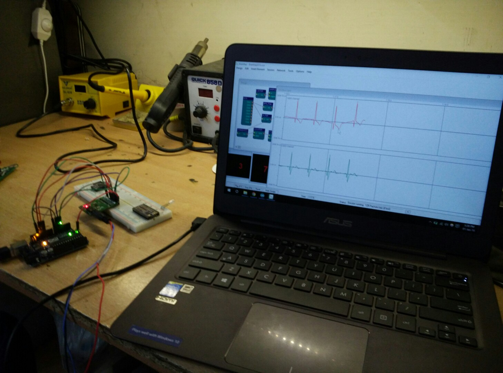
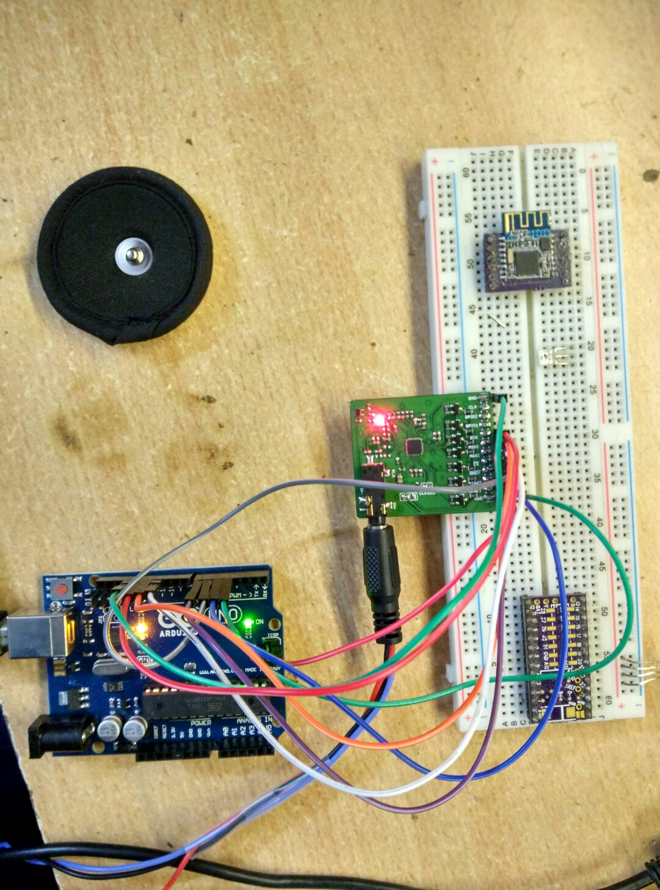
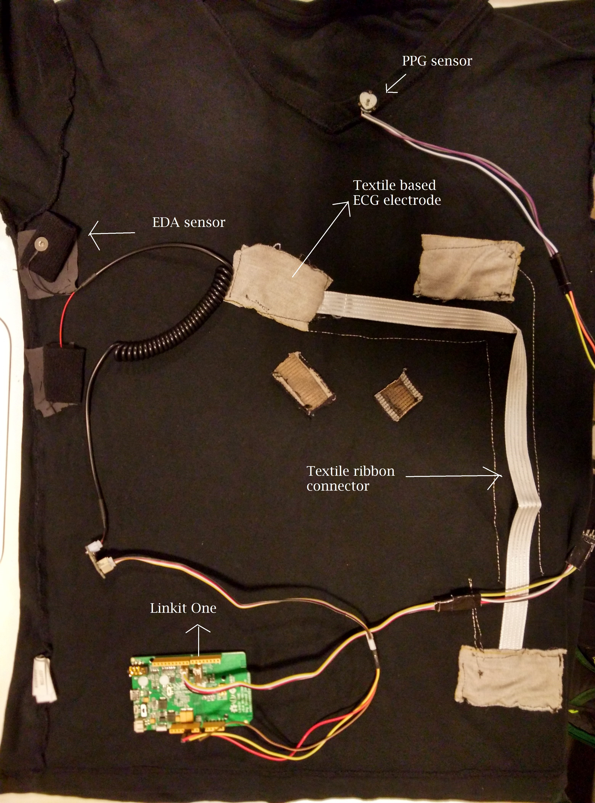
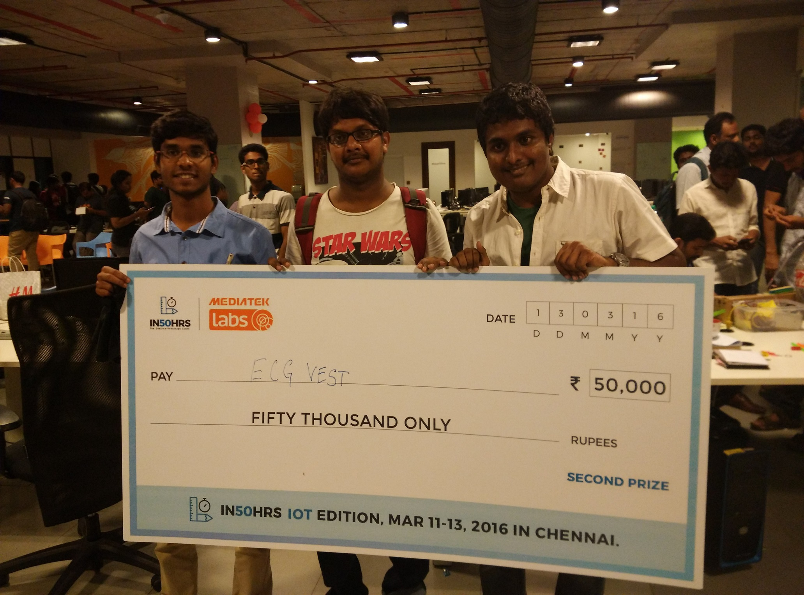

MEDCORDER
The Wearable Tricorder
We started this after looking at existing ECG health diagnostics which only give a snapshot of the person's health . Healthcare is an area where interactivity of data is lacking. Current wearables are of only 2 types. One being fitness tracker and other being outdated holster monitors. Problem with holster monitors are that they still use tape recorders. Quantus tried to do this by recording ECG and PPG in the ear. We found that we could get more data from the chest . That's why this crazy project started and we built MedCorder. Looking outside the box what I found with current biomed products is that it was either comfort or functionality and in my opinion we wanted to strike the balance between both that's why we started doing research on the fundamental aspect of ECG electrodes .
Current used electrodes are gel based and if you've had an ECG test you might have had the misfortune of the metal clamp electrodes . With google's project jacquard I realized that a denim could be more than just a stylish accessory. We also ran into conductive textiles which are in our terms used for long term in form of zari in silk sarees. We realized we were in the right track and so we started of by using old sarees and we just tried replacing it with conventional ECG electrodes. Our luck , there was this manufacturer in china who specialized in designing EMI shielding clothing for the tin foil hat .We then realised that same sort of materials were being developed by adidas for fitness tracking. We designed custom fabric with stainless steel instead of silver because of corrosion during wash.
We started it simple with 2 leads and we used ADS1292 adc from TI to develop ECG .The other challenge was actually porting the library to linkit one which we managed. Now that we had figured out ECG , we had to move to other parameters . we looked at others in this area such as Quantus with the ballistocardiogram BCG based tracking over ear wearable which could track BP but only measured one particular parameter.
The other one was Scanadu, with their not so variable multi parameter health tracker . We wanted do both in way and that's why chose to monitor more than just ECG . We had to quantify parameters such as blood pressure and also figure out a lot more data on the person's health. First on our list was ppg which basically measures the absorption spectrum of light through blood. We measured the same in the carotid artery in the collar part of our shirt . Electrodermal activity which indicates a person's stress level is also measured using conductive fabric. We use special piezoresistive fabric to measure the chest expansion and contraction for respiration rate .
To get accurate standardized measurements we need to add context to our data collection by tracking environmental parameters such as temperature humidity and also motion activity using an IMU .
The lack of contextual information from the holster is the reason why doctors don't prefer it for monitoring the patient's health .
All the data from MedCorder is securely stored in a micro sd card and can be securely shared with a doctor periodically using wifi gateway. We plan to make this device more clinically accepted by using 5 lead ecg .
By using PPG and ECG we'll be able to figure out the blood velocity which can be accurately correlated with blood pressure .
One of the main challenge we will be facing is finding a balance between fitness and medical challenges. After the whole Theranos affair we realized that getting a FDA approval was not so cut and dry. Since then we planned to only use this as an aid for a doctor. FDA regulations at the moment allow the device to be treated as a research study , adhering only to a few design guidelines and examinations.
Since we are not alone in this issue with all tech companies facing the same hurdle , we are confident that the the regulation would be updated .



